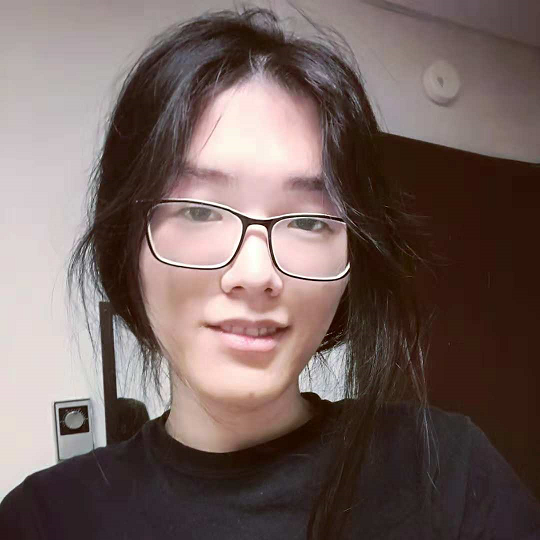

|

|
Chengming Liu
zblcm@163.com | https://github.com/zblcm | wechat:zblcm3 | 13153386325
Focused on computer graphics.
|
|
脚步触地稳定
Foot Stability
展示了通过输入的信号达成脚步与地面接触良好，动作稳定的模块。右边优化后的效果。
Shows the motion before/after a module taking foot signal and stabilize foot motion.
Right: after foot stability filter.
|
|
双手交互优化
Hand Interaction
展示了双手交互模块，修复了在肢体Retarget后，由于骨长差异带来的双手交互不正确的问题。下方的三个视频是修复双手交互之后的效果。
Shows double hand interaction module, which fix wrong hand motion caused by bone length difference after body retargeting.
Bottom: after double hand optimization.
数据来自 innerhand.
Data from innerhand.
|
|
平滑
Smoothing
展示了在线平滑算法，在有效消除跳变和抖动的同时，以低延迟保留了频率相对较高的拍手动作幅度。右侧是平滑模块之后的。
Shows online smoothing module, which removes sudden transitions and jitter in motion while preserving the amplitude of the clapping movement with high frequency.
Right: after smoothing.
|
|
Purdue University
Aug 2014 - May 2018
Bachelor of Science
|
Major
Computer Science
Core Mathmetics
|